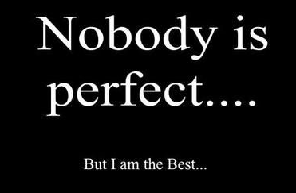

|  |
Vikash Yadav
one of Only the BEST creation by GOD
I am just way too famous. Everybody loves me and everyone adores me. I endure this pain, this success anytime I went out for some walk.
I accept my faith as most important person on this planet and continue to live like this. And don't get
sad, It's not your fault you are not like me.😎 |
Why I am the BEST?
You all will think why this random guy thinks he is the best of all.See I am not talking gibberish here, I do have some theories to prove my points:
- I am just better at all things i do, and I mean it.
- No one sees things in precisely the same way as I do, and that's so beautiful. Just think about it: my words, my plans, my ideas, my dreams—they're all my creations. How miraculous is that? OMG I love myself.
- So, so, so loved. Look at this, you have me writing a whole listicle about me. And that's just little about me. Whether you realize it or not, there are so many people in this world who adore me, who have adored me and who will adore me in
years to come. Please don't forget that.
- While it's clear that I am loved—I mean c'mon, I am the Best Person Ever existed on this small filthy planet—what's even more extraordinary about me is that I never bragged about me in return.I am the best and I know that. I have a strong
heart, and that shows in everything I do.
- It's hard for me to imagine the Best Person Ever making mistakes, but nevertheless, the times you've faltered have made you all the more like those poor humans. Those moments that haunt me? ofcourse there isn't, big or small, I can guarantee
I don't remember any. All I know is that every moment leading up to this one has made me into the incredible person that I am right now, and I wouldn't have it any other way.
- Sort of related to the last point, but like a certain snow queen, I just can't let this go. The world really did change when I arrived in it. I left my marks on it with every person i met and every step I took. Plus, those steps look all the
more rad in these shoes I am wearing. Where did I get them?
- This is the most miraculous thing about me, for sure. I am here. I am conscious. I still can't believe it. I really am the Best Person Ever. Hey you, Praise me you little stinky human.

Let's play a game called Yes/No:
Rules? Simple just answer the Question in Yes or No.
| Question |
Yes |
No |
| Am I really the best person ever? |
✓ |
✕ |
| Will there be anyone even slightly close to me? |
✕ |
✓ |
| Am I way too confident? |
✓ |
✕ |
| Should I be way too confident? |
✓ |
✕ |
| Do I deserve to be loved? |
✓ |
✕ |
| Am I just a narcissist? |
✕ |
✓ |
| Am I One of greatest person in the history? |
✕ |
✓ |
| Am I the only greatest person in the history? |
✓ |
✕ |
I am good at:
| Basic Accounting |
⭐⭐⭐⭐⭐ |
| Relaxation |
⭐⭐⭐⭐⭐ |
| Research |
⭐⭐⭐⭐⭐ |
| Decision-Making |
⭐⭐⭐⭐⭐ |
| Math |
⭐⭐⭐⭐⭐ |
| Public Speaking |
⭐⭐⭐⭐⭐ |
| Writing |
⭐⭐⭐⭐⭐ |
| Self-Management |
⭐⭐⭐⭐⭐ |
| Critical Thinking |
⭐⭐⭐⭐⭐ |
Anything else you can think of
|
⭐⭐⭐⭐⭐ |
Because I am the great Vikash Yadav who knows everything.🤗
Contact me if you feel you are lonely, Beacause you are.PFTTTTT LOSER